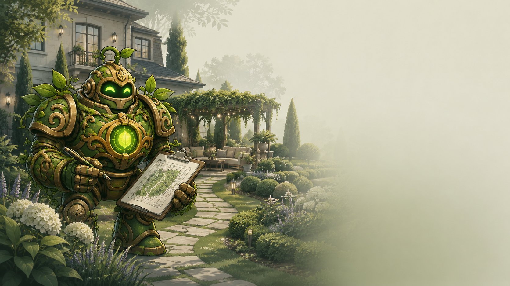
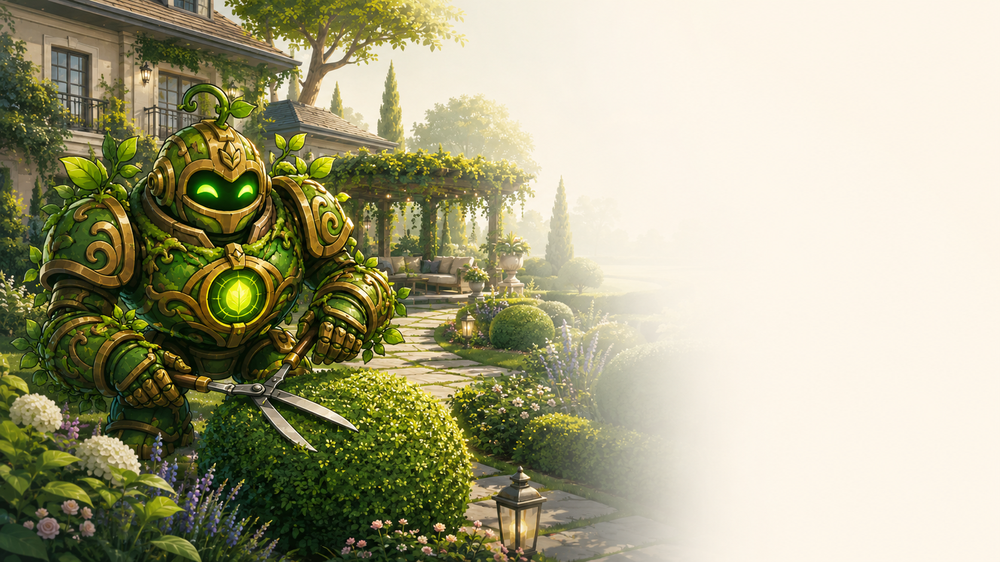

⌂
Paisagismo Residencial
Projetos personalizados para transformar o jardim da sua casa em um verdadeiro refúgio verde e acolhedor.

Paisagismo

Projetos personalizados para transformar o jardim da sua casa em um verdadeiro refúgio verde e acolhedor.

Cuidados regulares para manter seu jardim sempre bonito, saudável e bem cuidado durante todo o ano.